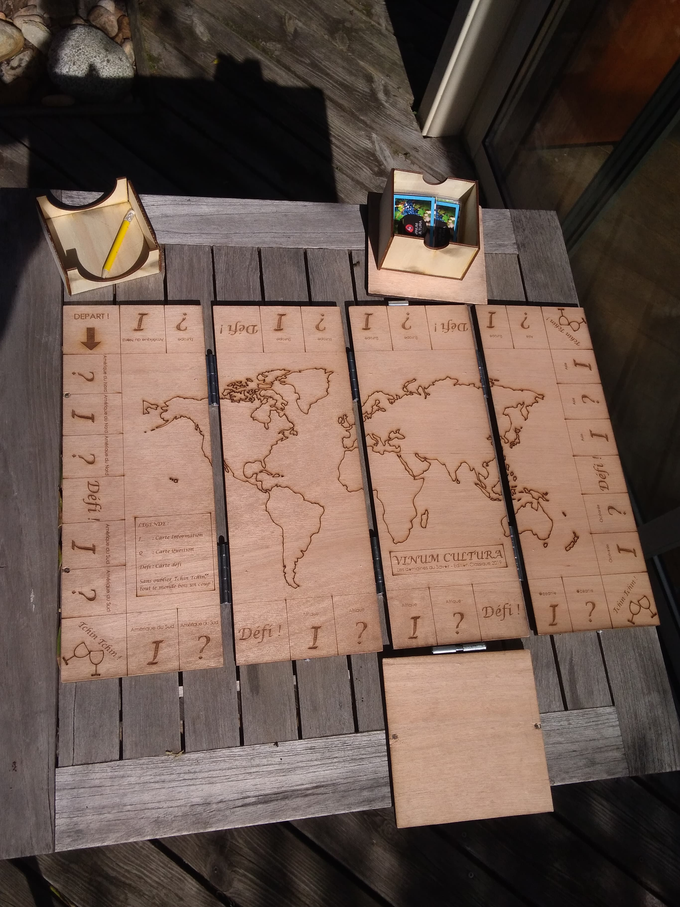
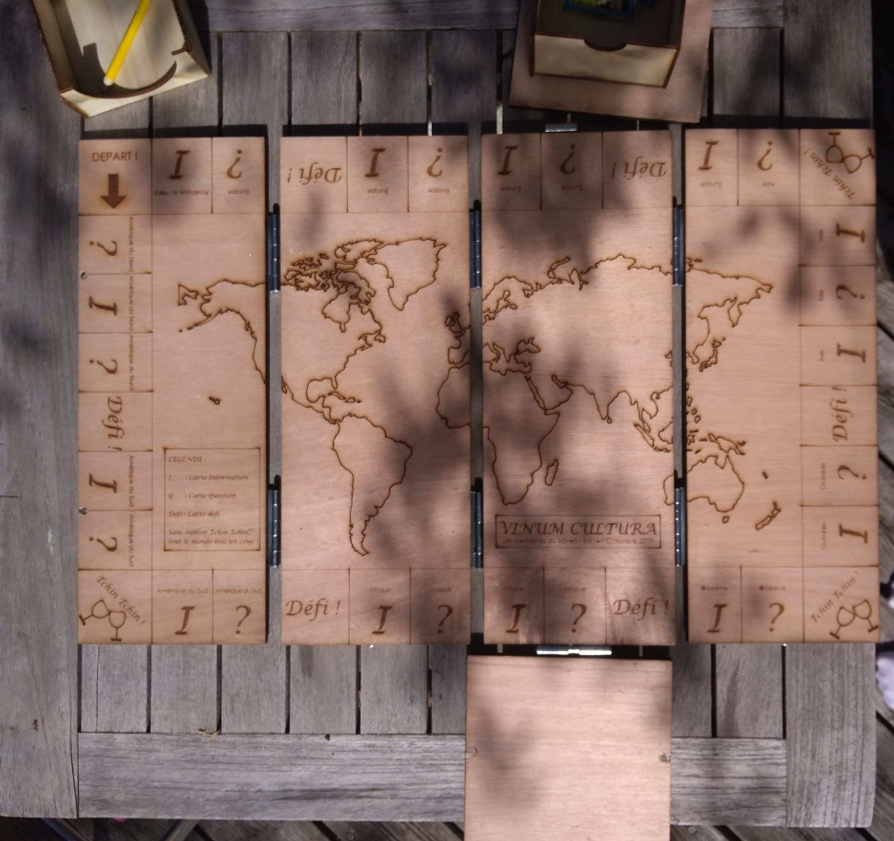

Apprendre sur le vin tout en s'amusant
Vinum Cultura t'ouvre les portes de tous les domaines du Savoir
En savoir +
Le projet Vinum Cultura
Le projet Vinum Cultura est né d'une envie de partager un bon verre de vin entre copains tout en acquérant de la culture de manière ludique sur les pratiques oeno-viti du monde entier.
La caisse
La caisse en bois est récupérée et reconditonnée dans un soucis environnemental. Ce sont généralement des caisses usagées de vin. Elles sont décloutées, néttoyées, gravées et montées sur des charnières. La boite a toujours sa fonction première de transporter une bouteille (taille magnum ou moins).

Le plateau de jeu
Le plateau est une carte du monde. Il permet de mettre en avant les différents continents sous plusieurs forme de cases telles que : des cases "question", des cases "information", des cases "défi" et des cases "tchin tchin". Après avoir lancé le dé, si l'on tombe sur une case "question" on tire une carte question et on doit y répondre. Si la réponse est correcte on peut avancer au prochain tour, si non on tire une nouvelle carte au prochain tour. Les case "information" permettent d'acquérir de la connaissance sur une partie du monde. Les cases "défi" permettent de mettre au défi un autre joueur sur une carte question (le gagnant avance au prochain tour et le perdant reste sur sa case). Enfin, si quelqu'un tombe sur une case "tchin tchin" tout le monde boit un coup !
L'équipe
Né d'une fratrie bordelaise vivant en plein coeur des Graves, le projet Vinum Cultura s'est imaginé lors d'un apéritif bien arrosé. Nous avons constaté que de part nos études différentes (médical, commerce et d'ingénieur) nous n'avions pas toute la culture suffisante en oenologie et viticulture. Etant cependant des grands amateurs de vins, nous avons souhaité continuer à entretenir notre passion à travers la création du jeu Vinum Cultura

Nous contacter
Pour nous contacter :
Mail : contact@vinumcultura.fr
Tel : +33 99999999
Adresse : 10 rue de la soif, 33000, Bordeaux